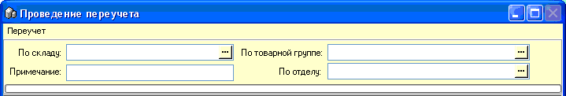
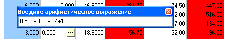
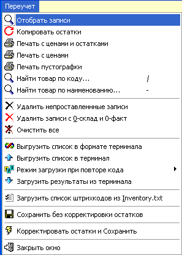
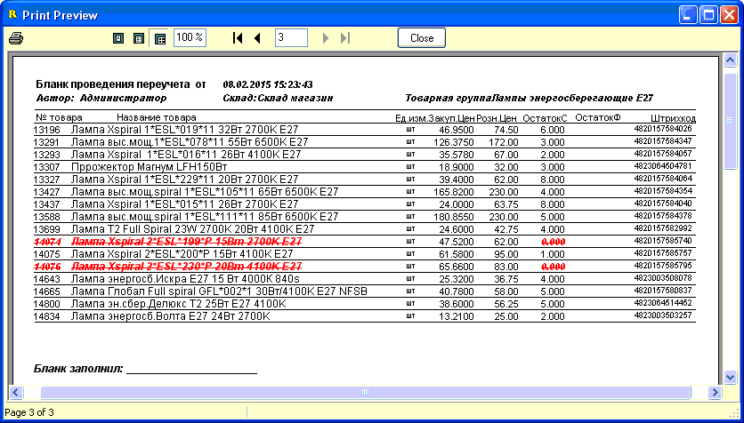
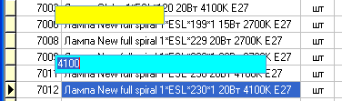
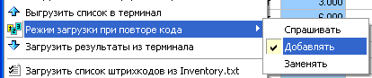

- При создании нового переучета первым делом
заполняется заголовок переучета. При этом, в зависимости от настроек программы
доступно заполнение как только по выбранной товарной группе, так и по отделу
(содержащему несколько товарных групп), или даже по всему сразу товару в
магазине (удобно только для магазинов с небольшим однотипным
ассортиментом).
- 
- После того как мы выбради склад и товарную группу
или отдел, выбираем "Отобрать записи" - первый пункт главного меню "Переучет",
что содержит весь необходимый функционал для работы с переучетом. После
этого программа добавляет в табличную часть переучета записи о остатках
выбранных товаров.
 По умолчанию,
на каждый товар создается 1 запись в табличной части переучета и
излишек/недостача по данному товару корректируется в количестве последней
партии. Однако, у товара может быть несколько партий с остатком, иногда
еще и с разной ценой. Если установлена сооответствующая настройка
(см.раздел справки "Сервис-Настройки-вкладка Наценка-Переучет"), то могут
отбираться все формирующие остаток партии товара. Это имеет свои недостатки -
переучет получается в разы больше, кроме того, невозможно так эффективно
пользоваться сканером/терминалом. Поэтому, обычно такие переучеты в разрезе
партий проводят выборочно по нескольким товарам, где ходят устранить пересорт
именно между партиями, а остальные товары из такого переучета удаляют.
Подробнее смотрите ниже в тексте справки.
По умолчанию,
на каждый товар создается 1 запись в табличной части переучета и
излишек/недостача по данному товару корректируется в количестве последней
партии. Однако, у товара может быть несколько партий с остатком, иногда
еще и с разной ценой. Если установлена сооответствующая настройка
(см.раздел справки "Сервис-Настройки-вкладка Наценка-Переучет"), то могут
отбираться все формирующие остаток партии товара. Это имеет свои недостатки -
переучет получается в разы больше, кроме того, невозможно так эффективно
пользоваться сканером/терминалом. Поэтому, обычно такие переучеты в разрезе
партий проводят выборочно по нескольким товарам, где ходят устранить пересорт
именно между партиями, а остальные товары из такого переучета удаляют.
Подробнее смотрите ниже в тексте справки.- -
- В процессе переучета пользователь с отпечатанных
и заполненных персоналом пустографок с фактическими остатками вносит их в
колонку факт - только эта колонка доступна к редактированию вручную.
- 
- Также колонку фактического
количества можно заполнять при помощи терминала сбора данных или сканера
штрихкода (см. ниже).
- 
- Рассмотрим подробно каждый следующий, после
"Отобрать записи", пункт данного меню.
- Копировать остатки - программа проставляет
колонку "Кол-во факт." равной колонке "Кол-во склад". Бывает удобно в
некоторых случаях.
- Печать с ценами и остатками - выводит ведомость
переучета на печать с колонками цен и остатков. Используют при доверии к
персоналу.
- Печать с ценами - печать ведомости переучета
только с ценами. Используют когда не доверяют персоналу, однако хотят
уменьшить вероятность пересорта путем сличения цены. Также используют для
параллельной проверки актуальности ценников на полках.
- Печать пустографки - минимальный вариант -
печатается только код/наименование товара и пустая колонка для вписывания
фактического остатка.
- Для примера внизу показан рисунок вывода на
печать с ценами и остатками (для удобства красным зачеркнутым курсивом
выделены коды, которых по данным программы не должно быть на
остатке).
- 
- Найти товар по коду... - вызывает желтую строку
поиска по коду. Введите код, нажмите Enter.
- Найти товар по наименованию - вызывает голубую
строку поиска по части наименования товара (произвольная часть строки, поиск
нечувствителен к регистру). Наберите, нажмите Enter.
- 
- Удалить непроставленные записи - удаляет из
ведомости все записи, у которых количество факт равно нулю. Опция доступна
только в режиме еще не сохраненного ранее переучета.
- Удалить записи с 0-склад и о-факт - удаляет из
ведомости записи товаров, у которых количество на складе и количество
фактическое равны нулю. Опция доступна только в режиме еще не сохраненного
ранее переучета.
- Очистить все - удаляет все записи в табличной
части, а также очищает заголовок переучета. Позволяет сформировать заново
новый переучет, если случайно были выбран не тот склад и/или товарная
группа/отдел.
- Выгрузить список в формате терминала - пункт
виден только при соответствующей настройке программы (см. раздел справки
"Настройки"). Создает текстовый файл специального формата, аналогичный тому,
который выгружается из терминала сбора данных. Редко используется, для
продвинутых пользователей.
- Загрузить список штрихкодов из Inventory.txt -
пункт виден только при соответствующей настройке программы (см. раздел справки
"Настройки"). Загружает простой текстовый файл, в котором есть список
штрихкодов/кодов построчно - 1 строка-1 штрихкод/код. На каждый найденный
штрихкод/код в табличной части проставляется количество 1шт. Если штрихкод/код
повторяется, действует выбранное правило меню "Режим загрузки при повторе
кода".
- Режим загрузки при повторе кода - меню в котором
устанавливается правило, что делать, если штрихкод или код, вносимый
автоматически из текстового списка или сканируемый сканером штрихкода или
загружаемый из терминала сбора данный уже имеет проставленное фактическое
количество. Доступны 3 варианта:
- 
- 1. Спрашивать - каждый раз при повторе будет
появляться диалоговое окно с вопросом, что делать? добавить к текущему
количеству или заменить текущее количество на вновь загруженное в случае
терминала или 1шт в случае сканирования штрихкода сканером.
- 2. Добавлять - при повторе кода к уже
проставленному "факту" будет прибавлено вновь загруженное количество в случае
терминала или 1шт в случае сканирования штрихкода сканером.
- 3. Заменять - старый "факт" будет удален, а
вместо него будет вписано вновь загруженное количество в случае терминала
или 1шт в случае сканирования штрихкода сканером.
- Наиболее часто используется вариант "Добавлять".
Это наиболее удобно, т.к. чаще всего повторы вызваны тем, что один и тот же
товар находится одновременно на разных полках в магазине. Также такой режим
используется при работе со сканером штрихкода - либо обычным ручным с
удлиненным кабелем или с радиосканером.
- В следующем разделе будут рассмотрены пункты меню
для работы с терминалом сбора данных.